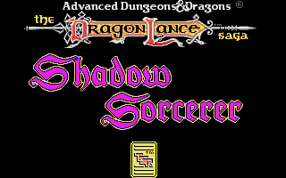
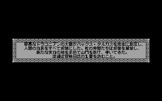
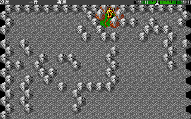
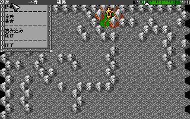

どんなゲーム？
シャドウ・ソーサラーは、1991年に SSI から発売された AD&D「ドラゴンランス」の RPG です（開発は U.S. Gold）。小説『ドラゴンランス戦記』の物語のうち、要塞パックス・タルカスからの脱出の後を描いています。
ドラコニアンに征服されたパックス・タルカスから奴隷を解放した「槍の仲間」は、数百人の難民を率いて、安住の地を求め南へ旅立ちます。仲間を選んで小隊を組み、ドラゴン卿の軍勢と戦いながら、難民を守って荒野と地下迷宮を進みます。
Shadow Sorcerer
Steam 版「Silver Box Classics」に入っている「Shadow Sorcerer」を日本語で遊べるようにする、非公式のファンメイドパッチです。 物語や場所の説明、できごとの文章、画面上のメニュー、呪文の一覧、メッセージまでを日本語にしています。 ゲームの DOSBOX フォルダにファイルを 1 つ置くだけで日本語になり、消せば英語に戻ります。
シャドウ・ソーサラーは、1991年に SSI から発売された AD&D「ドラゴンランス」の RPG です（開発は U.S. Gold）。小説『ドラゴンランス戦記』の物語のうち、要塞パックス・タルカスからの脱出の後を描いています。
ドラコニアンに征服されたパックス・タルカスから奴隷を解放した「槍の仲間」は、数百人の難民を率いて、安住の地を求め南へ旅立ちます。仲間を選んで小隊を組み、ドラゴン卿の軍勢と戦いながら、難民を守って荒野と地下迷宮を進みます。




ShadowSorcerer_JP.zip を展開します。winmm.dll を、ゲームの DOSBOX フォルダ（DOSBox.exe があるフォルダ）にコピーします。games\Shadow Sorcerer\DOSBOX に進みます。GOG 版の DOSBox（0.74-2.1）にも合わせてあります。GOG 版でも、ゲームを入れたフォルダの中の DOSBOX フォルダに winmm.dll を置いてください（GOG 版での動作はまだ確かめていません）。
ゲームのファイルは書き換えません。日本語にしたデータは、起動時に %LOCALAPPDATA%\SHADOW_JP フォルダに自動で作られます。
DOSBOX フォルダの winmm.dll を消すと英語に戻ります。%LOCALAPPDATA%\SHADOW_JP フォルダも消してかまいません。セーブデータはそのまま使えます。誤訳や不自然な訳に気づいたら、GitHub の Issues で教えてください。